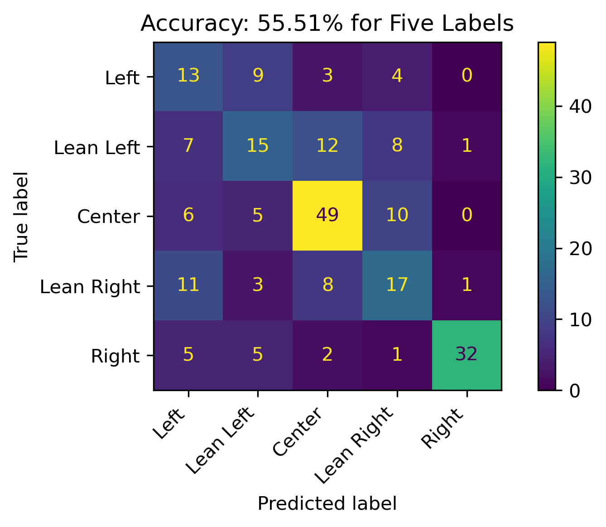
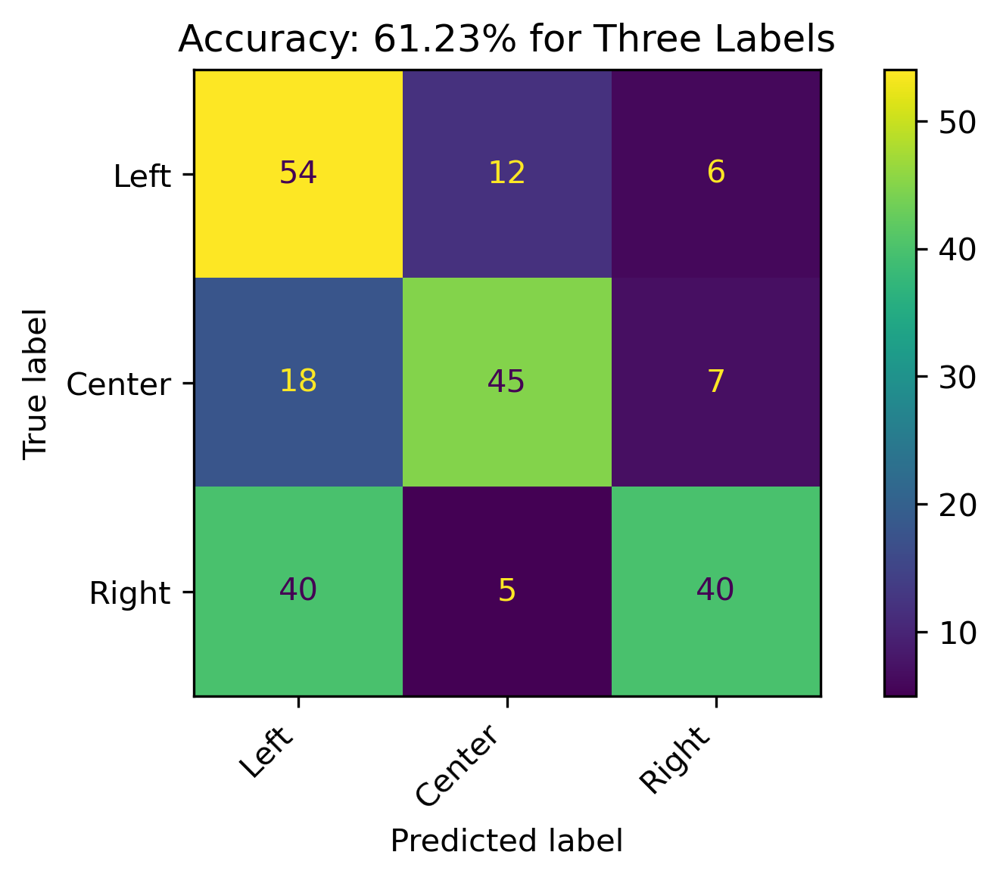
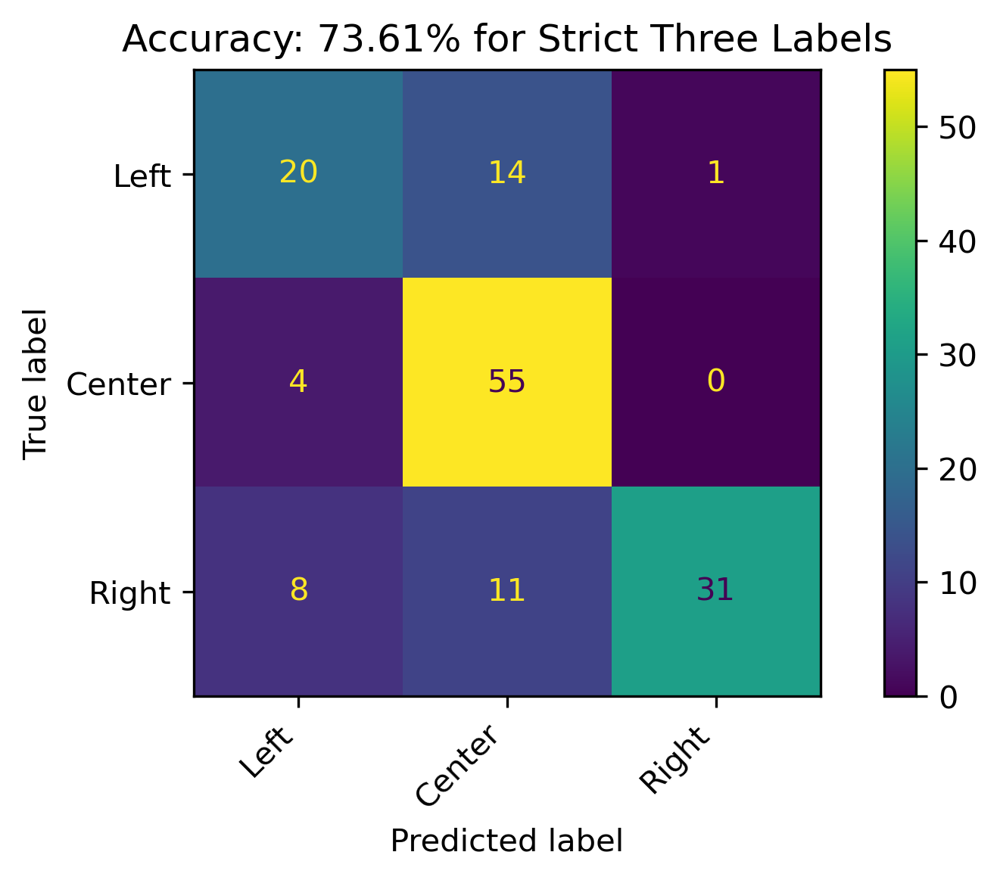
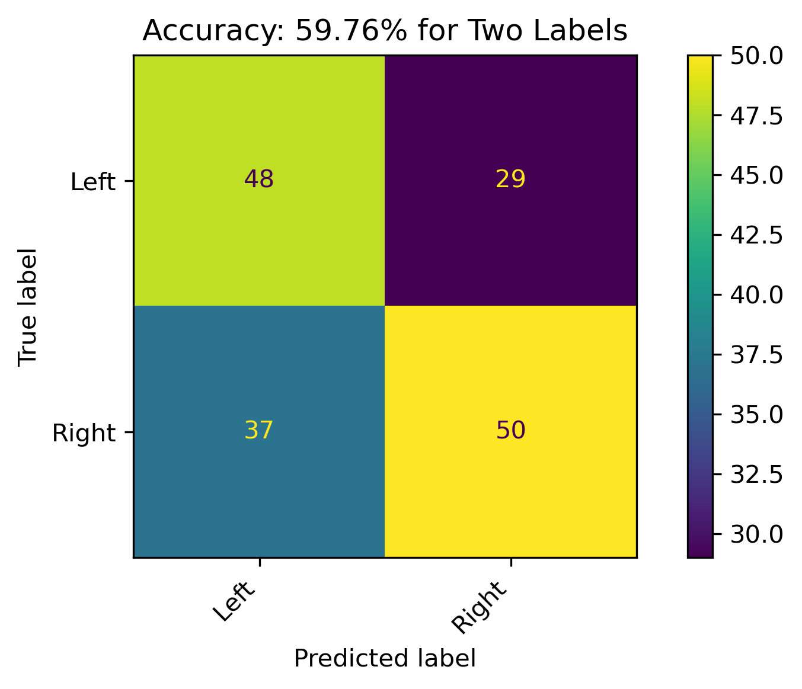
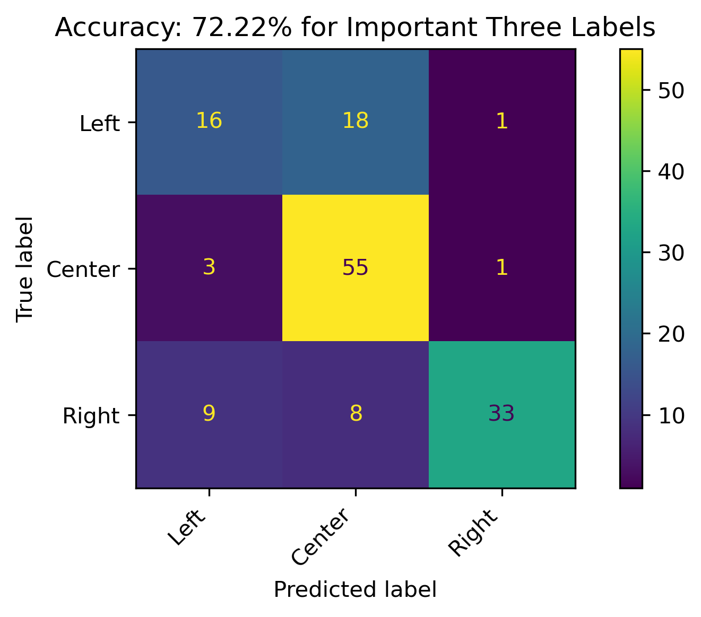
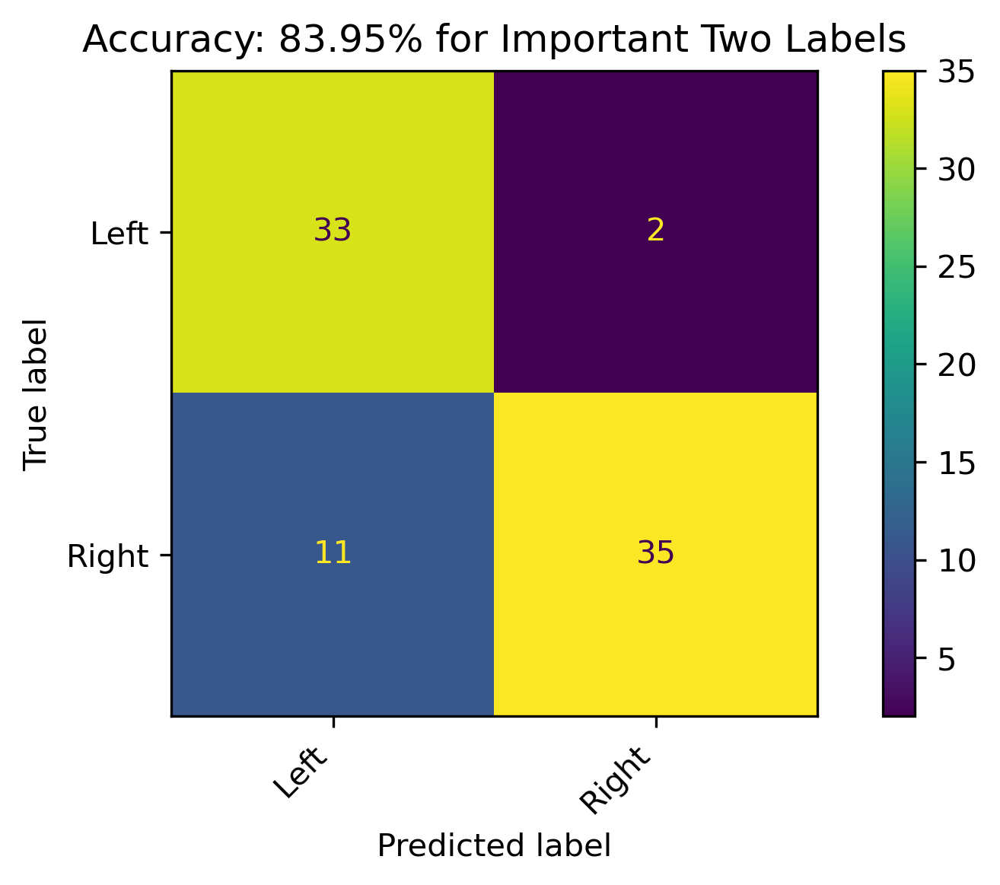

| Label | mean_test_score | rank_test_score | param_C | param_degree | param_kernel | mean_fit_time |
|---|---|---|---|---|---|---|
| Loading ITables v2.3.0 from the internet... (need help?) |
Modeling - Support Vector Machines
Introduction
Support Vector Machines (SVMs) are supervised learning methods which transform features into a higher dimensional space to separate the labels. The usefulness of an SVM comes from when the input data in its original dimensional space isn’t linearly separable, but in a higher dimensional space there exists a hyperplane which can linearly separate the groups of the data.
SVMs use a quadratic optimization algorithm, in which the final optimal dual form contains a dot product (or inner product). This allows for the use of kernels, which are functions that return an inner product in a higher dimensional space. Being able to apply kernels is essential, as just the solution to the dot product is needed and doesn’t actually need to be transformed into a higher dimensional space in practice.
Being able to use a dot product, and subsequently a kernel, allows for just the solution of the dot product to be used instead of actually transforming the data into a higher dimensional space. This makes SVMs highly efficient. Additionally, SVMs create a margin between the groups in the higher dimensional space. Any point on the margin is known as a support vector. Not only are they computationally efficient but they are also more resistant to outliers and noise due to this. Keep in mind that a single SVM is a binary classifier, however multiple SVMs can be ensembled together for more than a 2-class problem.
SVMs can only work on labeled numeric data. First, an SVM is a supervised machine learning method. This means, that it can only be used on labeled data in order to train the model. Second, due to the mathematic nature of dot products, and subsequently kernels, the data must be numeric.
Some of the common SVM kernels are:
- RBF (Radial Basis Function or Gaussian)
- Polynomial
- Linear
- Sigmoid
This section of the analysis will specifically use Support Vector Machine Classification sklearn documentation.
Strategy and Goals
More specifically, SVMs will be used here to create models for predicting political bias from text data. Aftering training models with news article which have known political biases, these models will be applied to Reddit data to project political bias, which could be a decent indicator of sentiment towards student loan relief in online social discourse.
See the Modeling Preparation page for a detailed breakdown of the data fromatting, labels for supervised learning, and necessity for disjointness.
Hyperparameter Tuning
Due to the availability of hyperparameters within the deciison tree classifier, GridSearchCV was used to test each of the parameters for each the label aggregations. This uses the entire dataset and cross validates that, folding it into 5 different folds in this case. It essentially creates the training and testing sets during the process within the 5 different folds.
The hyperparameters tested were:
- C (cost):
- 0.5
- 1.0
- 1.5
- 2.0
- 2.5
- 3.0
- kernel:
- linear
- poly (polynomial)
- rbf (radial basis function or gaussian)
Hyperparameter Results
Hyperparameter Best Results
| C | Degree | Kernel | Model | Accuracy |
|---|---|---|---|---|
| Loading ITables v2.3.0 from the internet... (need help?) |
Note that the combined search has rankings for each model based not only on accuracy but aspects such model fitting time. The Hyperparameter Best Results will be used for the following modeling.
Modeling
Five Labels

The overall accuracy for testing across all five labels is about 55.51%. Predictions for Center performed overwhelmingly well. This could be indicative to the proportion of the labels as discussed in the modeling preparations page.
Three Labels

When combining Lean Left and Lean Right with Left and Right, respectively, the model accuracy increasing to 61.23%. The model has a decent performance, with predictions for the Right political bias outperforming the other prediction categories. Left performed the worse.
Strict Three Labels

When the leaning political biases weren’t combined, the accuracy of the model increased by over 10% for the three political bias labels. Overall decent results with its best performance on Right labels.
Two Labels

When combining Lean Left and Lean Right with Left and Right, respectively, and dropping the Center label, the model accuracy was about 60%. There were still a high amount of incorrect predictions, which could be reflective on the leanings.
Strict Two Labels

When the leaning political biases weren’t combined, and dropping the the Center label, the accuracy of the model was phenomenonal! On this particular training and testing set, there was a 96% accuracy. This is a respectable model, and the best performance with the SVM classification in this section. It should be noted that this model on the grid search performance was only just above 80% accuracy when averaged across several different training and testing datasets.
Reddit Projections
To apply this model in projecting political bias on Reddit authors, feature permutation was performed on the best performing 3-Class and 2-Class models to obtain the most important features from the original 1000 labels. Subsequently:
- The models were retrained on this subset of important features.
- The Reddit count vectorized data was then reduced to these feautres.
- The models were appplied to the Reddit subset.
Feature Importance through Permutation
Three Features - Strict Three Political Biases
| feature | importance | absolute_importance | |
|---|---|---|---|
| Loading ITables v2.3.0 from the internet... (need help?) |
Two Features - Strict Two Political Biases
| feature | importance | absolute_importance | |
|---|---|---|---|
| Loading ITables v2.3.0 from the internet... (need help?) |
The new Three Label Model will have 198 features and the new Two Label Model will have 351 features.
Retrained Models
The retrained models with fewer features had roughly about the same accuracy (when compared to the grid search cross validation results).
Three Features

Two Features

Reddit Projection Results
| Author | Predicted Bias Three | Threshold Three | Predicted Bias Two | Threshold Two | Threshold | Conclusion |
|---|---|---|---|---|---|---|
| Loading ITables v2.3.0 from the internet... (need help?) |
The above illustrates the predicions for both the three and two label models as well as their probabilities. Combining the results in the last two columns illustrates the overall political bias (including leanings). Recall that the Reddit data is unlabeled, so the probabilities act as sure the model is in predicting the political biases. Recall that political biases are correlated with sentiment, with the Right having a more negative sentiment and the Left having a more positive sentiment.
Conclusion
News articles published by organizations with known political biases were modeled in an attempt to project political bias on text content when it is unknown. Although political bias can vary between authors and news topics within a single organization, a model which does well with high feature data, such as text content, was used in this attempt. The models were most accurate when political bias was distinctly either three or two categories. When the model was used on distinctly Left or Right categories of news sources, it performed quite well. This was an important outcome, as the hypothesis of this overall analysis was to identify specific features which could predict political bias in an attempt to project positive and negative sentiment on the topic of Student Loan Forgiveness. Ultimately, the model was used on Reddit Authors’ combined content to analyze this sentiment on the social discourse platform. Given such a high performing model, sentiment was projected with how confident the model was on this.
Modeling Conclusions
Please see Modeling Conclusions for a complete synthesis of the supervised machine learning models, especially concerning bias and sentiment.